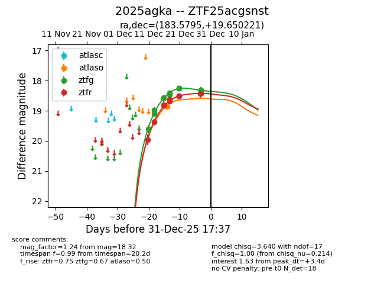
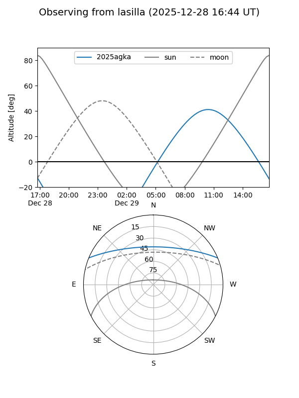
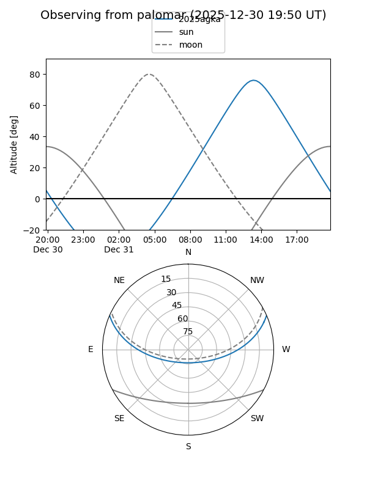
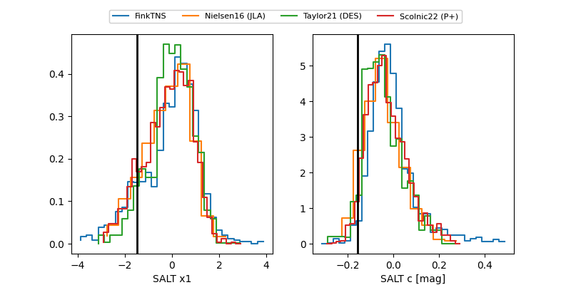

2025agka
Target 2025agka at 2025-12-18 12:07
Aliases and brokers:
FINK: fink-portal.org/ZTF25acgsnst
Lasair: lasair-ztf.lsst.ac.uk/objects/ZTF25acgsnst
ALeRCE: alerce.online/object/ZTF25acgsnst
TNS: wis-tns.org/object/2025agka
YSE: ziggy.ucolick.org/yse/transient_detail/2025agka
alt names
ZTF25acgsnst (ztf,fink_ztf)
2025agka (tns,yse)
Coordinates:
equatorial (ra, dec) = 183.5795,+19.65022
equatorial (HMS+DMS) = 12:14:19.09,+19:39:00.79
galactic (l, b) = (252.2825,+78.67387)
Photometry
last atlaso=18.87, ztfg=18.56, ztfr=18.80
1 atlaso, 5 ztfg, 4 ztfr detections
Lightcurve

Visibility


Additional plots
